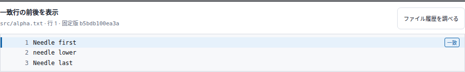
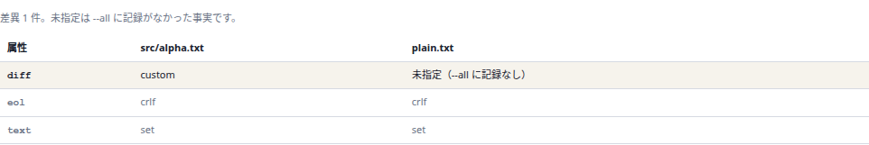
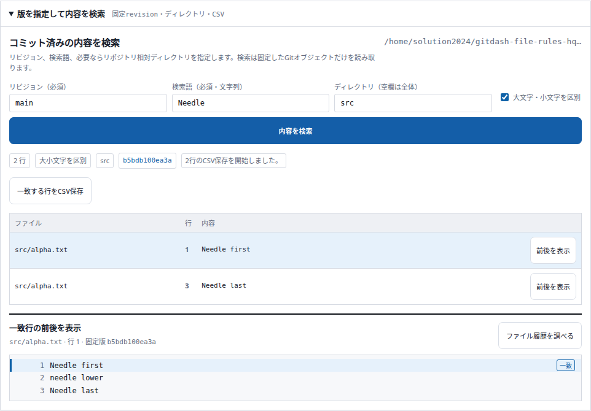
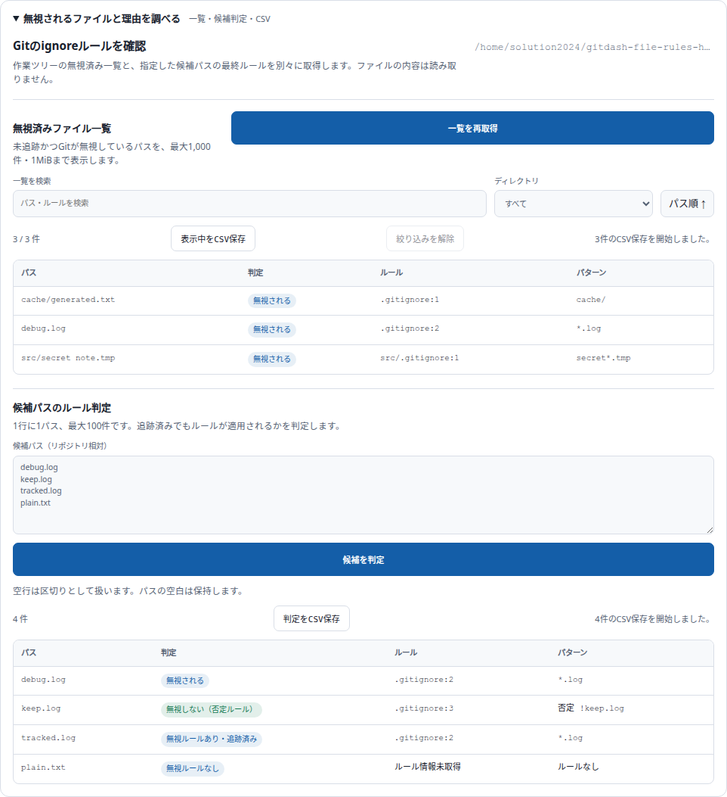
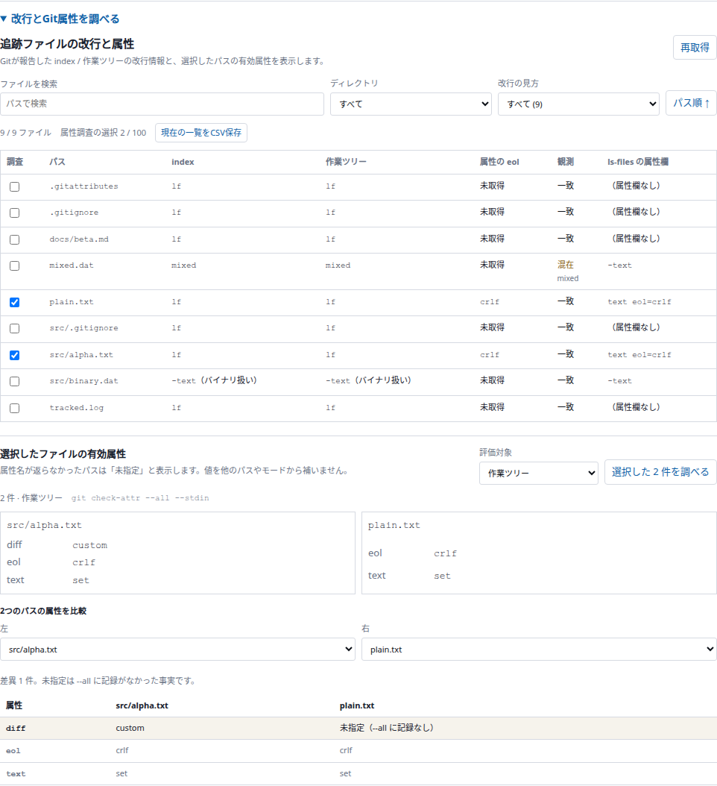

2026年10月20日。「ファイル」タブへ版固定の内容検索、無視ルール診断、改行・Git属性確認を追加しました。
30 + 14 × 5 = 100点
指定の加点基準による点数です。客観的な品質保証ではありません。
| 領域 | 追加機能と価値 | 加点 |
|---|---|---|
| 内容検索 | 指定した版のコミット済みテキストを文字列検索し、大小文字の扱いを選ぶ | +5 |
| 内容検索 | リポジトリ内のディレクトリを明示して検索範囲を限定する | +5 |
| 内容検索 | 一致行を選び、同じ固定コミットの前後の内容を表示する | +5 |
| 内容検索 | 検索で見つけたファイルを固定コミット・パス付きで履歴調査へ引き継ぐ | +5 |
| 内容検索 | 一致行と行番号・パスをCSV保存する | +5 |
| 無視ルール | Gitが無視している未追跡ファイルを一覧する | +5 |
| 無視ルール | 候補パスを一括診断し、適用元・行・否定ルール・追跡済みを区別する | +5 |
| 無視ルール | 取得済みの無視ファイルをパス・ルール・ディレクトリで絞り込む | +5 |
| 無視ルール | 無視ファイル一覧・候補の診断結果をCSV保存する | +5 |
| 改行・属性 | 追跡ファイルのindexと作業ツリーの改行状態を一覧する | +5 |
| 改行・属性 | 改行の差異・混在・不明やディレクトリで一覧を絞り込む | +5 |
| 改行・属性 | 選択ファイルの有効属性を作業ツリーまたはindexの設定で一括評価する | +5 |
| 改行・属性 | 2つのパスの属性を比較し、値の違いと未指定を確認する | +5 |
| 改行・属性 | 改行一覧と取得済み属性をCSV保存する | +5 |
Frontend 217件、Backend 269件成功。Next.js本番ビルド成功。独立レビューの未解決P1なし。実Git/APIとChromiumで検索、診断、属性比較、CSV、入力変更後の遅延応答破棄、空結果と失敗の区別を確認しました。PC1440pxとモバイル390pxでページ横はみ出しとpage errorなし。
mainへコミットしGitHubへpush。既存Compose wrapperで再ビルド・再起動し、アプリの稼働を確認しました。
検索は1000行・4MiB、無視一覧と改行一覧は1000件・1MiB、候補・属性診断は100パスまで。上限や取得失敗を明示し、Gitの状態・設定は変更しません。




